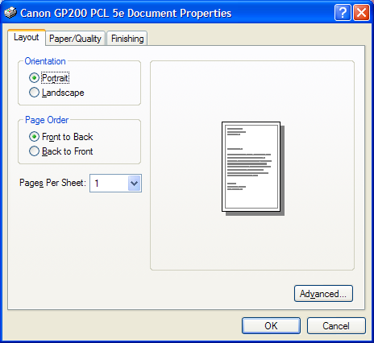

title: Print Property Sheet description: The Print property sheet is a standard user interface that enables the user to specify the properties of a particular print job. ms.assetid: b52b71cc-a583-4a21-8a53-501ab442e6f8 keywords:
The Print property sheet is a standard user interface that enables the user to specify the properties of a particular print job. The property sheet is composed of a set of property pages that varies by printer or application. To a subset of standard Windows property pages, some printers might add driver-specific property pages and some applications might add application-specific property pages.
To create and display a Print property sheet, initialize a PRINTDLGEX structure and pass the structure to the PrintDlgEx function.
The following illustration shows a typical Print property sheet.

Most members of the PRINTDLGEX structure are identical to those of the PRINTDLG structure. For descriptions of how to use the common structure members to interact with the dialog box controls, see Print Dialog Box. The remainder of this topic describes the Print property sheet features that differ from the Print dialog box.
You can customize a Print property sheet by specifying a custom dialog box template for the lower portion of the General page and by specifying additional property pages to follow the General page. For more information, see Customizing the Print Property Sheet.
You can implement a callback object to receive notifications and messages from the PrintDlgEx function while the property sheet is displayed. Applications that provide custom templates or additional pages use the callback object to communicate with the property sheet. For more information, see Callback Object for the Print Property Sheet.
The Print property sheet provides support for specifying multiple, noncontiguous page ranges to print. The lpPageRanges member of the PRINTDLGEX structure specifies an array of PRINTPAGERANGE structures in which each structure specifies a page range.
The Print property sheet displays a Current Page radio button as part of the Page Range group of radio buttons. To control the Current Page radio button, use the PD_CURRENTPAGE and PD_NOCURRENTPAGE flags in the Flags member of the PRINTDLGEX structure.
This section discusses the following topics.
You can customize the Print property sheet in the following ways:
You cannot change the upper portion of the General page. You cannot change property pages provided by the printer driver.
To provide a custom template for the General page:
Create a custom template for the lower portion of the General page by modifying the PRINTDLGEXORD template specified in the Prnsetup.dlg file. Typically, the custom template must be the same size as the default template. However, you can enlarge the custom template if you specify the PD_USELARGETEMPLATE flag to create a larger General page. The control identifiers used in the default Print dialog template are defined in the Dlgs.h file.
Use the PRINTDLGEX structure to enable the template as follows:
If your custom template is a resource in an application or dynamic-link library, set the PD_ENABLEPRINTTEMPLATE flag in the Flags member. Use the hInstance and lpPrintTemplateName members of the structure to identify the module and resource name.
-Or-
If your custom template is already in memory, set the PD_ENABLEPRINTTEMPLATEHANDLE flag. Use the hInstance member to identify the memory object that contains the template.
If you use a custom template to define additional controls, you must provide a callback object to process input for your controls. The callback object implements a IPrintDialogCallback::HandleMessage method which receives messages sent to the custom dialog box.
To provide additional property pages
Use the function to create the additional pages.
Use the lphPropertyPages member of the PRINTDLGEX structure to specify an array of handles to the additional pages.
The dialog box procedures specified when you created each page process messages sent to the pages.
You might want to provide a callback object that implements the interface. The PrintDlgEx function uses this interface to pass to the application a pointer to an IPrintDialogServices interface. The dialog box procedures for the additional property pages can use this interface to retrieve information about the currently selected printer.
An application that displays a Print property sheet can implement a callback object to receive notifications and messages from the PrintDlgEx function while the property sheet is displayed. To provide a callback object, specify a pointer to the object in the lpCallback member of the PRINTDLGEX structure.
The callback object must implement the IPrintDialogCallback interface. The PrintDlgEx function calls IPrintDialogCallback methods in the following situations:
The callback object should also implement the IObjectWithSite interface. The PrintDlgEx function calls the method to pass a pointer to an IPrintDialogServices interface to an application. The IPrintDialogCallback methods can use the IPrintDialogServices interface to retrieve information about the currently selected printer. The IPrintDialogServices interface is also useful for applications that create additional pages to follow the General page of the Print property sheet. The dialog box procedures for the additional pages can call IPrintDialogServices methods.
Â
Â